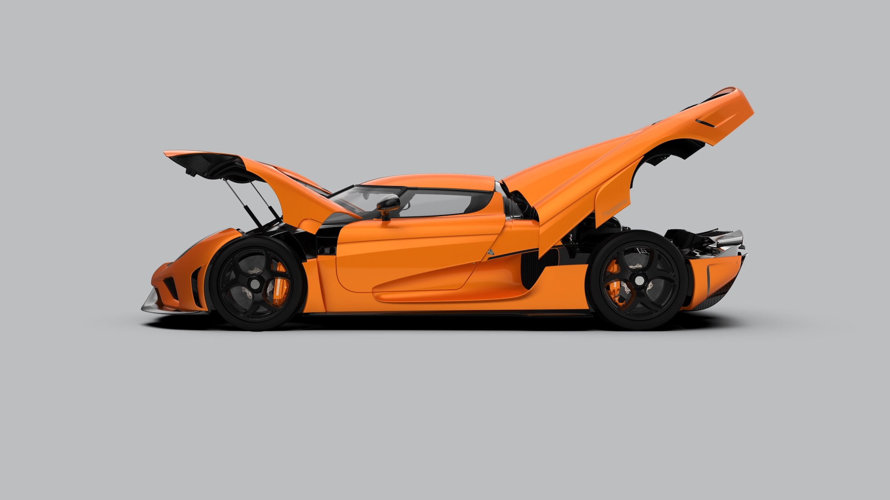
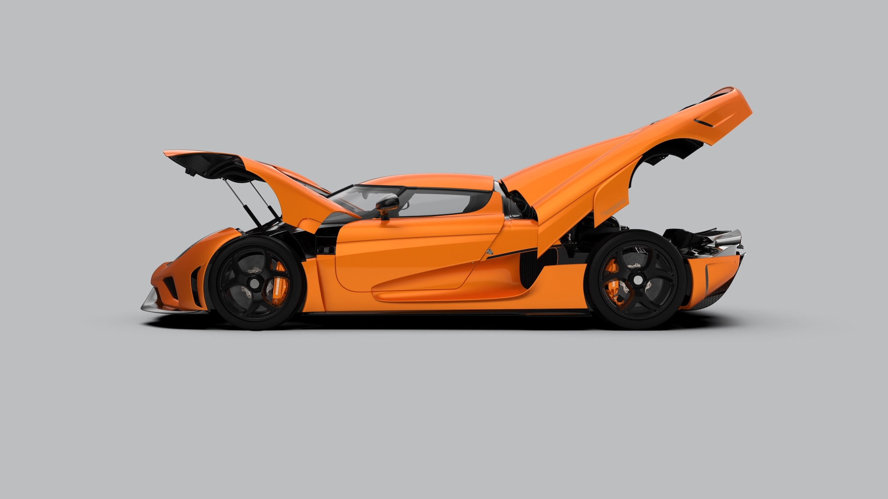

-
车 型
- 杰 梅 拉
- 杰 斯 科
- R E G E R A
-
历 史 车 型
- 阿 格 拉 RS
- 一 ：1
- 阿 格 拉 R
- 阿 格 拉 斯
- 阿 格 拉
- C C X R 特 别 版
- C C X R T R E V I T A
- C C X R 版 本
- C C X R
- C C X 版
- C C X
- C C G T
- C C R
- C C 8 S
- C C 原 型
- 科 尼 赛 克 认 可 修 复 计 划
- 新 闻
- 品 牌 故 事
- 联 系 方 式
- 生 活 方 式


 



科尼赛克Regera是一款特别设计的豪华超级跑车，继承了科尼赛克跑车的特性：极致、轻量化、犹如赛车般的公路车。
科尼赛克Regera通过名为科尼赛克直直接驱动系统的全新动力系统技术，将一台强大的双涡轮V8内燃发动机与三台电机和尖端的电池结合起来。这项革命性的技术去掉了传统的变速箱，使车辆更轻更高效。
尽管传统的科尼赛克跑车在实用性、舒适性和功能方面一直都达到令人惊讶的水平，但我们关注的始终是制造地球上最快的汽车——无论在赛道或其他任何地方。科尼赛克Regera延续了这一传统，但又采用了创新技术，融合了惊人的速度、最佳的舒适性和独特的直接驱动驾驶体验。
以“统治”为名，恰如其分地体现了动力、响应性和豪华性之间出人意料的融合。Regera将成为道路之王，这是有史以来加速最快、动力最强的量产汽车。尽管兼顾了领先技术和舒适程度，但是Regera的车重依然较轻，使其在赛道上保持出色的表现。从150到250公里/小时加速仅需3.2秒，0到400公里/小时加速在20秒内完成，我们相信唯一可能在赛道上超过Regera的只能是另一台科尼赛克。
Regera在瑞典Ängelholm的科尼赛克工厂内以手工制作打造，限量生产80台。这是科尼赛克生产线首次同时生产两个不同车型。
Regera内饰增加了隔热、8向电动可调记忆功能座椅、科尼赛克9寸信息娱乐系统、4G和Wi-Fi连接、带录音功能的前后和内部摄像头、苹果Car Play、高级音响系统、环境照明灯和许多其他新功能。Regera还配备了前后驻车传感器以及远程诊断和固件更新功能。
每一台科尼赛克的核心和灵魂都是其内燃发动机。Regera的内燃发动机沿袭品牌路线，采用可靠稳定的科尼赛克5.0升干式油底壳润滑的双涡轮增压V8发动机。
科尼赛克V8发动机是世界上尺寸最小而且符合市场准入标准的内燃发动机，每升可输出220马力（在使用普通汽油情况下）。发动机的紧凑性意味着Regera的重量更轻，获得灵巧高效的效果。
Regera的V8发动机与前任车型Agera的发动机略有不同。Regera的内燃发动机不必过于极端，这是因为Regera的动力总成可达到1,500马力，并且通过直接驱动系统其电力系统可以提供瞬时扭矩。相反，Regera采用了更小更快的涡轮增压器，进一步提高了车辆的驾驶性能和响应能力。
传统的混合动力车意味着在重量、复杂性、成本、组装和效率方面作出妥协。
有别于传统的混合动力汽车，Regera避免了混合动力的各种常见缺点。相反，Regera是一种全新的混合动力汽车类型，就这点而言，Regera的真正意义在于这是全新的科尼赛克，也是全新的汽车类型。
传统的“并联式”混合动力汽车因为需要两个独立的推进系统来驱动汽车，导致车重较大。而“串联式”混合动力车虽然在重量、复杂度和成本方面的有所改善，但因为太多能量转换会导致其效率的折损。
科尼赛克的直接驱动传动系统（KDD）由Christian von Koenigsegg发明，并由科尼赛克高级工程团队为专门为Regera开发而成。
科尼赛克的直接驱动传动系统（KDD）取代了内燃机的传统传动方式，变速箱被移除，取而代之的是由内燃机通过直接驱动传动系统（KDD）直接驱动后轴，避免了因为多个齿轮或可变变速器造成的能量损耗。
比如在高速公路巡航时，发动机通过直接驱动传动系统（KDD）直接向车轮输送动力，回避了升挡或降挡等系列操作，与传统的变速器或无级变速相比，直接驱动传动系统（KDD）可减少50%以上的传动系损失。
作为内燃机的补充，Regera配备了三台由YASA开发的电机。除了提供极致的响应能力外，这些电机还可实现扭矩矢量控制、 再生制动和能量转换。YASA的轴向磁通电机功率密度极高，是直接驱动传动系统（KDD）的关键部件。Regera每个后轮有一个YASA电机，提供直接电力驱动，此外曲轴上也有一个，提供扭矩加注、发电和起动马达的功能。
这三台电机构成了量产汽车史上最强大的电机装置，取代了普通变速器的齿轮，极大地减轻了重量同时加强了动力和扭矩，以及扭矩矢量控制能力。

科尼赛克开发了一种滑动离合器装置，原理是在快速加速时，使用液力耦合器以中/高速度转换扭矩。这使得内燃机可以获得转速和动力，在没有传统变速箱的情况下，也可以营造出传统变速箱的降挡体验和听觉享受。
换挡拨片位于方向盘两侧，左拨片用于在给电池组充电时增强再生制动效果。右拨片用于启动液力偶合器的“降挡”操作。
科尼赛克极尽全力为Regera配置可以兼备性能和和安全性的电池方案。其研究和测试的成果是达到800伏和4.5千瓦时电池组，使Regera成为世界上第一台800伏级别的量产汽车。
这种极致的电池技术可提供惊人的525千瓦的放电和高达200千瓦的充电，只有曾出现在F1方程式赛车上的电池技术可与之媲美。
科尼赛克Regera电池组还拥有当今汽车电池中最优的冷却能力。其他电动汽车制造商一般会在电池组周围使用冷却液管吸取热量，但是这个方式很难覆盖所有区域。而Regera电池组封装在一个密封单元内，所有关键的热敏元件都被经过优化的冷却液覆盖，电池组内部和周围的每一个关键表面都以最高效率冷却。
最后是关于电池组的重量，通过对优质电池技术的研究和投资，最终得以生产的Regera配备的电池组不仅性能更好，而且重量只有75千克，比概念版减轻了40千克。
每个电池单元的电压、充电状态、健康状况和温度都被仔细监测。为了提高效率、安全性和稳定性，电池被封装在碳纤维外壳中。电池位于碳芳纶底盘通道，这是车中最受保护的区域。
Regera的革命性意义在于，对比其他相似等级的混合动力车型，Regera的电动马力（700马力）是其他车型的将近三倍，总动力也超出300马力。此外，Regera保持了重量的优势，并且功能齐全，例如六向可调电动座椅和自动化操作的车身。
Regera的直接驱动传动系统（KDD）提供了惊人的性能的同时，也提供前所未有的顺畅驾控体验，完全随心所欲。
科尼赛克研发了一个全新的后副车架，使发动机和变速器可以安装在主动式车架上。在一般行驶状态时，车架保持柔软并隔离发动机噪音和振动。在高速行驶时，车架趋向坚固以巩固车身，并给予更强烈的响应。减震器的高度和刚度都很灵活，可以根据驾驶者的操控进行即时调整。
当车辆从远处驶来，人们对于车辆的第一印象通常来自于日间行车灯（DRL）。我们即使在远处看，Regera也能被轻易识别，因此设计了全新的星群日间行车灯系统。
通过分布在车灯上的LED来实现星群效果，就像星星被设置在由抛光碳纤维构成的夜空中。
LED使整个车灯如钻石般闪亮，是科尼赛克的美学体现。
Regera是世界上第一台可通过一键遥控实现全部门舱自动开合的汽车。我们称这个系统为“Autoskin”。
由于紧凑型轻质液压技术的发展，科尼赛克已经成功实现了Regera门舱的自动化，而且几乎不增加额外的车身重量。Regera配备主动式前后翼、底盘控制和提升系统等标准功能，意味着液压泵和蓄能器也可以用于实现车门和前后机盖的自动化开合。Autoskin采用液压系统取代了重量相当的气柱，对车身重量的影响被降至最低。
Autoskin具有软闭合机制，使开合过程更添优雅。这套自动开合系统只增加了5千克的总重量，因此全自动开合是理想之选。
所有需要开合的门舱和后视镜都装有传感器，以防止在开合时撞到附近的物体，如路肩、低矮的屋顶等。
科尼赛克One:1采用了世界上第一个顶置式安装的主动尾翼。对应其尺寸和重量，这个创新的解决方案提供了最大的下压力。
Regera将这一解决方案提升到了新的层次，后翼可以完全缩回车身，在静态时显得优雅，在巡航时减少阻力。可折叠的主动式尾翼称得上是碳纤维艺术的轻量化作品，其动态令人着迷。
为什么要使用顶置式安装的尾翼？由支柱连接车身的尾翼很常见，也是个不错的设计方案。
然而，空气动力学测试表明，尾翼的下侧提供了最大的下压力，因此应尽量减少对该侧的干扰。而One:1和Regera的尾翼由于采用顶置式安装，形成一个未受干扰的底面，使下压力最大化。
科尼赛克与Akrapovic为Regera合作研发了定制的钛合金排气系统。独特的排气系统包括由Christian设计的鱼尾式排气口，这种设计在这半个世纪都未曾出现，Regera重现了昔日时代的性能跑车的迷人声浪！
传动
· 科尼赛克直接驱动系统 (KDD)动力传输数据
· 内燃机功率：1100马力（91辛烷值的DIN或95辛烷值的RON上，如使用E85燃料会稍微增加） · 内燃机扭矩：1,250牛·米 · 电动推进：700马力 · 电动扭矩：900牛·米 · 4.5 千瓦/小时， 800伏，浸没式液冷电池组综合数据
· 功率输出：超过1,500马力或1.11兆瓦 · 扭矩：超过2,000牛·米 · 净重：1,470千克 · 整备质量：1,590千克（包括所有液体和油箱加满）功率图
内燃机
· 科尼赛克5.0升双涡轮增压V8铝发动机 · 每气缸4阀门，双顶置凸轮轴 · 压缩比：9.3:1 · 缸径：92毫米 冲程：95.25毫米 · 运用科尼赛克专利背压降低系统的双陶瓷滚珠轴承涡轮增压器，1.4巴增压压力 · 主动式液压发动机支座 · 干式油底壳润滑 · 优化进气量的碳纤维进气歧管 · 发动机重量：189千克 · 动力输出：7,800转/分时820千瓦（1,100马力），红线@8,250转/分 · 扭矩：2,700-6170转/分时达1,000牛·米 · 峰值扭矩：4,100转/分时达1,280牛·米电动驱动
· 870牛·米和525千瓦（700马力），具有扭矩补充和扭矩矢量控制功能 · 800伏4.5千瓦/小时液冷电池组，总重量75kg动力总成（内燃机+电机）
· 1.11兆瓦/1,500马力推进管理
· 科尼赛克发动机管理模块 · 内燃机和电机均具备Ⅱ型车载诊断系统车身
· 双门双座，可拆卸硬顶篷，并可收纳在前机盖下 · 车身由预浸碳纤维/凯芙拉(kevlar)和轻质夹层增强材料制成牵引力控制
· 三种模式：湿地-普通-赛道制动
· 前制动器：通风陶瓷制动盘，直径397毫米，宽度40毫米，6活塞 · 后制动器：通风陶瓷制动盘，直径380毫米，宽度34毫米，4活塞 · 带陶瓷活塞的科尼赛克卡钳 · 动力辅助车轮
· 科尼赛克第二代中央锁止式中空超轻量化碳纤维车轮 · 前轮： 19” x 9.75” · 后轮： 20” x 12.5”轮胎
· 专用米其林Supersport（可选米其林Cup2轮胎） · 前轮：275/35 – 19” (Y) · 后轮：345/30 – 20” (Y) · 单向非对称螺纹模式
REGERA相关新闻

上海市静安区河南北路17号
（021）5662 3008
marketing@koenigseggcn.com
嘉信集团官方网站
科尼赛克全球官方网站


版权所有@ 2020-科尼赛克中国